Benutzung
Erste Einrichtung
Nach der Installation der Möhrenschleuder kann das Tool zbsp unter localhost:8000 oder jedweder Domain die bei der Installation eingerichtet wurde aufgerufen werden.
Es muss der Name des Betriebes eingegeben werden und es kann eine Fußzeile für die Lieferscheine angegeben werden.
Diese Optionen sind danach änderbar.
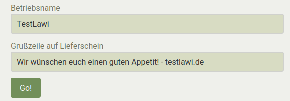
Richte nun nötige Einheiten ein auf der Einstellungsseite, mehr infos unten im Fahrplan.
Fahrplan
Einheiten
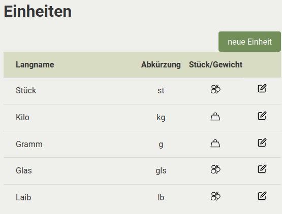
In den Einstellungen können Einheiten angelegt werden. Einheiten haben einen Namen, Kurznamen und einen Einheitentyp.
Zum Beispiel:
Name: "Kilogramm", Kurzname: "Kg", Einheitentyp: Gewicht
Name: "Stück", Kurzname: "St", Einheitentyp: Stück
Du kannst alle notwendigen Einheiten jederzeit, auch später in laufender Verteilung, anlegen. Du solltest damit möglichst beginnen (ein Produkt ohne Einheiten anlegen macht nicht so viel Sinn). Einheiten können auch geändert werden, das kann allerdings die Statistiken gut zerschiessen.
:warning:
Wichtig: Beim Verteilen von Erzeugnissen die bei Abnehmer:Innen eher im Grammbereich ankommen sollte eine Einheit wie zbsp Gramm eingetragen werden und das Erzeugniss dann eher in
50000 gals in50kgverteilt werden! Der grund dafür sind Rundungsfehler die sich bei einer Verteilung im tiefen Kommabereich sonst einstellen würden.
Stationen
In der Stationsübersicht kannst du Stationen hinzufügen, ändern und löschen.
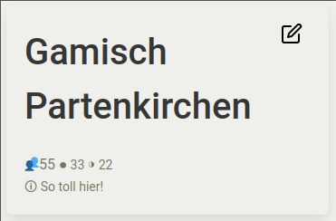 Stationen haben einen Namen, Ganze Anteile, Halbe Anteile, eine Reihenfolge und ein Infofeld.
Das Infofeld ist nur Intern für nützliche Infos für die Nutzer:Innen. Die Reihenfolge bestimmt wie die Stationen in der Übersicht und der Verteilung angezeigt werden. Ganze und Halbe Anteile sind natürlich für die Berechnung später wichtig.
Die Stationen müssen vor der Verteilung alle korrekt eingetragen sein.
Zum Beispiel:
- Name: Südost
- Ganze: 12
- Halbe: 8
- Reihenfolge: 1
- Infofeld: Gemüsestraße 15, 12345 Stadt, bei "Lecker" klingeln
Produkte
In der Produktübersicht können Erzeugnisse hinzugefügt, geändert und gelöscht werden.
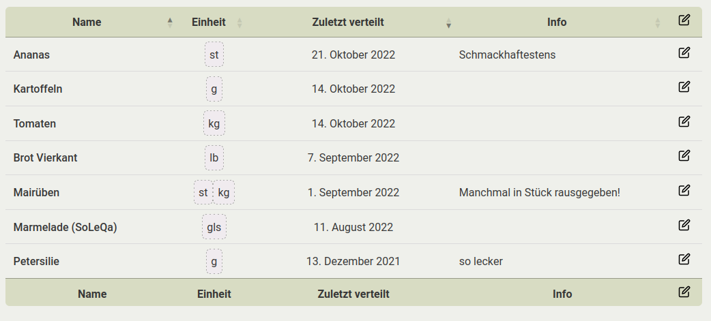
Ein Produkt hat einen Namen, ein oder mehrere Einheiten und Infofeld. Das Infofeld ist nur Intern für nützliche Infos für die Nutzer:Innen.
Zum Beispiel:
- Name: Rote Beete
- Einheiten: Kilogramm, Stück
- Infofeld: Manchmal als Stück rausgegeben
Ausserdem wird die Liste danach sortiert wann ein Erzeugniss dass letzte mal verteilt wurde. Es kann auch selber sortiert und gesucht werden. Für statistische Zwecke ist sehr zu empfehlen ein Produkt nicht doppelt einzutragen sondern kurz zu suchen ob es schon vorhanden ist und gegebenfalls eine Einheit mehr einzutragen.
Beim Klick auf ein Produkt gelangt man in die Verteilungsansicht falls die Verteilung schon gestartet wurde
Verteilung
Das ist das komplexeste und gleichzeitig die Herzstückseite des Tools. Wenn die Verteilung gestartet wurde (siehe unten) kann mit einem Klick auf ein Erzeugniss in der Produktübersicht die Verteilung dieses Erzeugnisses losgehen.
- Falls ein Produkt mehrere Einheiten hat wird man gefragt welches man Verteilen möchte. Es ist auch möglich ein Produkt mit all seinen Einheiten zu verteilen. 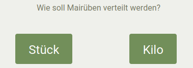
- Falls ein Produkt in Einheitentyp
Stückverteilt wird erscheinen+und-Knöpfe zum einfachen hinzufügen oder wegnehmen von anteilen pro station und jeweils für halbe und ganze anteile. Es wird auch einRestangezeigt und es gibt auch einen Hinweis pro Station wieviel Mitglieder dort sind um die Verteilung einfacher zu gestalten. 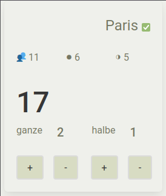 - Falls ein Produkt schon verteilt wurde wird man auf der "Verteilseite" darauf hingewiesen und hat nun die Möglichkeit das Produkt zusätzlich zu verteilen oder zu überschreiben.
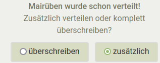
- Zusätzlich: Verteile das Erzeugniss zusätzlich, wird automatisch zu den bisherigen Werten addiert.
- Überschreiben: Verteile das Erzeugniss erneut.
Auf der Verteilseite muss die Menge des Erzeugniss angegeben werden.
Es können vereinzelte Stationen abgewählt werden mit Klick auf ihren Namen. 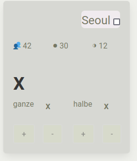
Verteilung wird berechnet mit Klick auf einen der Knöpfe: 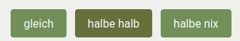 * gleich: alle Anteile kriegen gleich viel * halbe halb: halbe Anteile kriegen halb so viel * halbe nix: halbe Anteile kriegen offensichtlich nix
Wenn du zufrieden mit der Verteilung bist kannst du mit klick auf Speichern das ganze so wie du es siehst abspeichern. Die Seite bleibt so bis du wegklickst. Solltest du danach allerdings etwas ändern überschreibst du mit erneutem Speichern natürlich wieder das abgespeicherte.
:warning:
Die Verteilung funktioniert ist jedoch gerade der wackeligste Teil der Anwendung! Ich werde mir mühe geben nach anständigem Erlernen von Javascript und DOM-Beherrschung eine bessere Nutzererfahrung zu programmieren- das wird spätestens April 2023 der Fall sein.
Starten
Mit klick auf Verteilung starten rechts im Menu kann man die Verteilung starten.
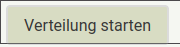
Während der Verteilung
Es gibt während der Verteilung unter Übersicht eine Übersicht und im Menu rechts stehen die schon Verteilten Erzeugnisse. Durch klick darauf erscheinen wieder Details darüber wie an welche Station verteilt wurde.
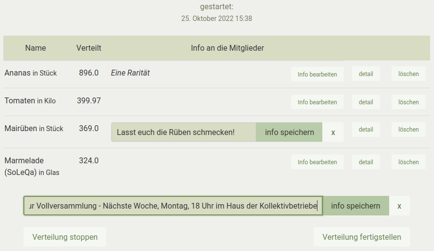
Abbrechen
Die Verteilung kann auch abgebrochen werden in der Übersicht. Dazu muss in der Übersicht auf Verteilung stoppen geklickt werden
Infos für Lieferscheine
Es kann in der Übersicht auch Infos hinzugefügt werden. Es gibt dazu für jedes Produkt ein Infofeld sowie ein Infofeld dass generell auf jeden Lieferschein kommt.
Beispiele:
- Lieferschein info:
Nächste Woche ist große Versammlung des Betriebs. Kommt gern zur Betriebsfeier und bringt Kuchen mit. - Erzeugniss info:
Diese Woche sind die Radieschen leider etwas kleiner geworden
Fertig stellen
Wenn alle Produkte verteilt sind und alle Informationen die du geben willst eingetragen kannst du in der Übersicht die Verteilung fertigstellen.
Daraufhin werden alle Angaben in der Datenbank gespeichert, der Statistik zur Verfügung gestellt und die Verteilung wird beendet. Es können daraufhin die Lieferscheine in History generiert und ausgedruckt werden.
History
In der History Übersicht siehst du alle fertiggestellten Verteilungen, sortiert nach Ihrem Datum. Du kannst selber sortieren und Suchen.
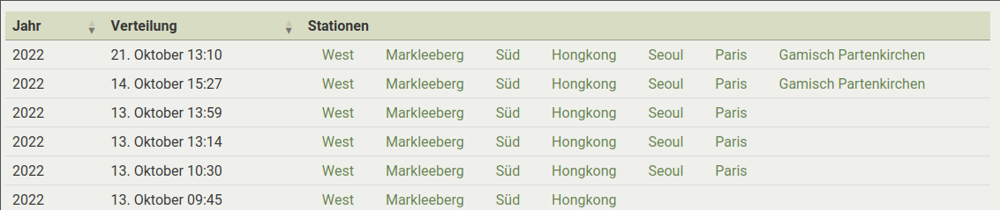
Mit Klick auf eine Station erhälst du eine Vorschau von dem Text den Mitglieder zu Gesicht kriegen, mit weiterem Klick auf PDF erhälst du das PDF der jeweiligen Station und Verteilung.
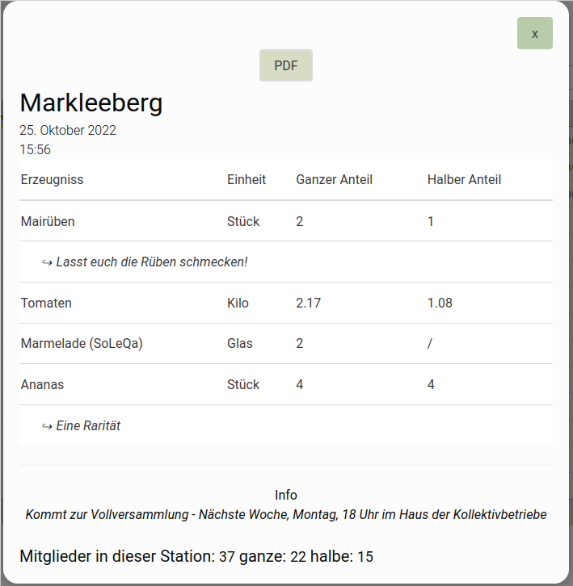
Stationen Verlauf
Erste Testseite um Statistiken angenehm und gut aufbereitet darstellbar zu machen. 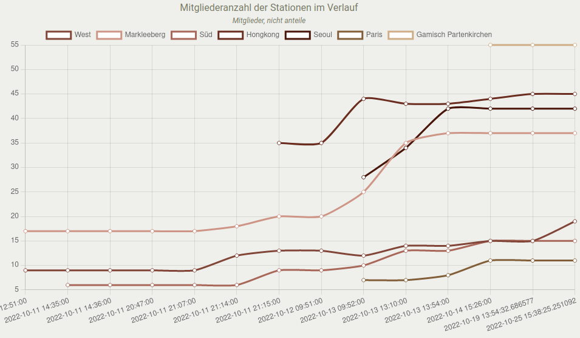